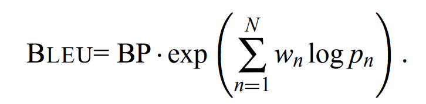

"土地是世界上唯一值得你去为之工作, 为之战斗, 为之牺牲的东西,因为它是唯一永恒的东西。"
-- Gone with The Wind
"An inch of time is worth an inch of gold. An inch of gold cannot buy an inch of time."
-- Chinese Proverb
"The essential things in life are seen not with the eyes, but with the heart."
"只有用心才能看清事情本质，真正重要的东西是肉眼无法看见的。"
-- The Little Prince
Nous avons 4 traducteurs différents : ChatGPT-3.5, ChatGPT-4, DeepL et notre propre modèle de traduction.
Afin d'évaluer et de comparer la qualité des traductions générées par différents traducteurs, j'ai utilisé le score BLEU (Bilingual Evaluation Understudy) qui est une métrique courante utilisée pour évaluer la qualité des textes traduits par rapport à des traductions de référence.
Le score BLEU est calculé en comparant les n-grammes (séquences de n mots) du texte traduit avec les n-grammes du texte de référence. Plus le score BLEU est élevé, meilleure est la qualité de la traduction.
1. Traduction à évaluer : Collecte des traductions générées par les traducteurs automatiques basé sur les mêmes phrases (nous avons choisi 3 phrases au taotal).
2. Traductions de référence : Collecte des traductions de référence qui sont généralement reconnu par tout le monde.
3. Calcul du score BLEU pour chaque traduction en utilisant l'outil .
Les résultats du score BLEU pour chaque traducteur sont les suivants :
Sur la base des scores BLEU, nous pouvons conclure que DeepL a obtenu le score le plus élevé, suivi de près par notre modèle de traduction. ChatGPT-4 a obtenu un score intermédiaire, tandis que ChatGPT-3.5 a obtenu le score le plus bas.